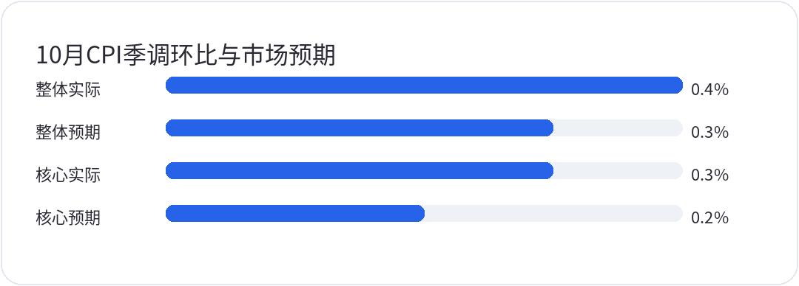
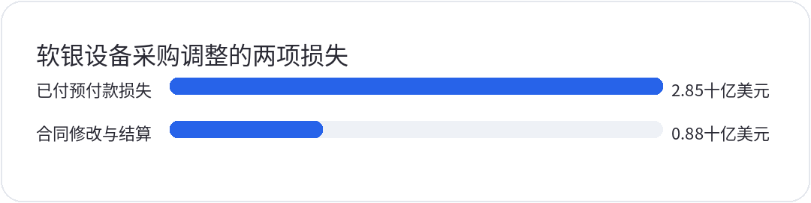
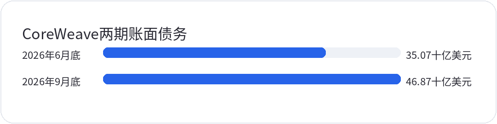

<div style="margin:0;padding:0;background:#f5f7fa;color:#2a2a34;font-size:16px;line-height:1.9;font-family:-apple-system,BlinkMacSystemFont,'SF Pro Text','PingFang SC','Hiragino Sans GB','Microsoft YaHei',Arial,sans-serif;font-variant-numeric:tabular-nums;font-feature-settings:'tnum' 1,'lnum' 1;text-align:left !important;text-align-last:left;letter-spacing:0;word-spacing:normal;white-space:normal;word-break:normal;box-sizing:border-box;"><div style="margin:0;background:#ffffff;padding:28px 22px 44px 22px;box-sizing:border-box;text-align:left !important;text-align-last:left;letter-spacing:0;word-spacing:normal;white-space:normal;word-break:normal;"><p style="display:block;width:100%;margin:0 0 12px 0;padding:0;color:#2763e9;font-size:10px;line-height:1.6;font-weight:650;letter-spacing:0.12em;text-align:center !important;text-align-last:center;word-spacing:normal;white-space:normal;word-break:normal;box-sizing:border-box;">美股 · 期权 · 资讯 · 观点</p><div style="margin:0 0 30px 0;padding:0;text-align:center !important;text-align-last:center;word-spacing:normal;white-space:normal;word-break:normal;box-sizing:border-box;"></div><div style="margin:0 0 0 0;padding:28px 0 0 0;text-align:left !important;text-align-last:left;letter-spacing:0;word-spacing:normal;white-space:normal;word-break:normal;box-sizing:border-box;"><div style="margin:0 0 12px 0;padding:0;text-align:left !important;line-height:1.2;border:0;display:flex;align-items:center;gap:10px;text-align-last:left;letter-spacing:0;word-spacing:normal;white-space:normal;word-break:normal;box-sizing:border-box;"><span style="display:inline-block;flex:0 0 auto;vertical-align:middle;color:#2763e9;font-size:12px;font-weight:850;letter-spacing:0.12em;line-height:1.2;text-transform:uppercase;border:0;box-sizing:border-box;">0 · MACRO</span><span style="display:block;flex:1 1 auto;min-width:36px;vertical-align:middle;height:1px;margin:0 0 2px 0;background:#2763e9;line-height:1px;font-size:0;border:0;box-sizing:border-box;"></span></div><p style="margin:0 0 16px 0;padding:0;color:#2a2a34;font-size:22px;line-height:1.45;font-weight:850;text-align:left !important;letter-spacing:0;text-align-last:left;word-spacing:normal;white-space:normal;word-break:normal;box-sizing:border-box;">通胀高于预期，利率压力还没过去</p><p style="margin:0 0 16px 0;padding:0;color:#454550;font-size:16px;line-height:1.9;font-weight:400;text-align:left !important;letter-spacing:0;word-spacing:normal;white-space:normal;word-break:normal;text-align-last:left;box-sizing:border-box;">11月10日，美国劳工统计局公布10月CPI。整体环比上涨0.4%，高于路透社经济学家调查预期的0.3%；核心环比上涨0.3%，也高于同一调查预期的0.2%。住房分项上涨0.3%，贡献了超过30%的整体涨幅，食品和能源分别上涨0.5%与0.7%。价格压力仍有黏性，这份数据尚不足以支持市场提前认定货币政策会转松。</p><p style="margin:4px 0 6px 0;padding:0;text-align:center !important;text-align-last:center;word-spacing:normal;white-space:normal;word-break:normal;box-sizing:border-box;"></p><p style="margin:0 0 16px 0;padding:0;color:#9a9aa8;font-size:12px;line-height:1.6;text-align:center !important;text-align-last:center;word-spacing:normal;white-space:normal;word-break:normal;box-sizing:border-box;">实际值来自11月10日BLS发布，市场预期来自路透社经济学家调查。全部为季调月环比，不是同比，也不代表未来通胀路径。</p><p style="margin:0 0 16px 0;padding:0;color:#454550;font-size:16px;line-height:1.9;font-weight:400;text-align:left !important;letter-spacing:0;word-spacing:normal;white-space:normal;word-break:normal;text-align-last:left;box-sizing:border-box;">美联储理事沃勒提出，若核心月环比在0.3%左右或更高，应该考虑50基点收紧；这是个人条件式立场，不能当作联邦公开市场委员会已经决定。长端利率上行也在考验估值承受力。10年期美债收益率盘中曾突破5%，财政部当日约15时30分的日度参考值为4.98%，比前日4.88%上行10基点。对先投入、后回款的AI基础设施，高利率会同时影响新增融资成本和远期收入的折现。</p><p style="margin:0 0 16px 0;padding:0;color:#454550;font-size:16px;line-height:1.9;font-weight:400;text-align:left !important;letter-spacing:0;word-spacing:normal;white-space:normal;word-break:normal;text-align-last:left;box-sizing:border-box;">股票市场并未出现全面恐慌。标普500收于7520.93点，下跌0.38%；纳指100下跌0.60%，常规交易时段成交量较前日减少，VIX也回落至19.46。指数承压与个别高负债公司的资金压力需要分开判断。判断后续风险，应优先看融资条款有没有变贵，以及企业能否按合同进度把投资转成回款，而不只看一天的涨跌。</p></div><div style="margin:30px 0 0 0;padding:28px 0 0 0;text-align:left !important;text-align-last:left;letter-spacing:0;word-spacing:normal;white-space:normal;word-break:normal;box-sizing:border-box;"><div style="margin:0 0 12px 0;padding:0;text-align:left !important;line-height:1.2;border:0;display:flex;align-items:center;gap:10px;text-align-last:left;letter-spacing:0;word-spacing:normal;white-space:normal;word-break:normal;box-sizing:border-box;"><span style="display:inline-block;flex:0 0 auto;vertical-align:middle;color:#2763e9;font-size:12px;font-weight:850;letter-spacing:0.12em;line-height:1.2;text-transform:uppercase;border:0;box-sizing:border-box;">1 · FOCUS</span><span style="display:block;flex:1 1 auto;min-width:36px;vertical-align:middle;height:1px;margin:0 0 2px 0;background:#2763e9;line-height:1px;font-size:0;border:0;box-sizing:border-box;"></span></div><p style="margin:0 0 16px 0;padding:0;color:#2a2a34;font-size:22px;line-height:1.45;font-weight:850;text-align:left !important;letter-spacing:0;text-align-last:left;word-spacing:normal;white-space:normal;word-break:normal;box-sizing:border-box;">软银37.3亿美元损失，要分清何时付的钱</p><p style="margin:0 0 16px 0;padding:0;color:#454550;font-size:16px;line-height:1.9;font-weight:400;text-align:left !important;letter-spacing:0;word-spacing:normal;white-space:normal;word-break:normal;text-align-last:left;box-sizing:border-box;">软银11月10日披露，7月至9月归母净亏约1.12万亿日元。截至9月30日的半年财报还确认，设备采购计划调整造成37.3亿美元损失，其中28.5亿美元来自此前已付、不可退还的预付款，另有8.8亿美元合同修改及结算费用。提前锁定设备名额，要承担需求与建设方案后来改变的成本。这里的损失确认不能简单写成当季又有37.3亿美元现金流出。</p><p style="margin:4px 0 6px 0;padding:0;text-align:center !important;text-align-last:center;word-spacing:normal;white-space:normal;word-break:normal;box-sizing:border-box;"></p><p style="margin:0 0 16px 0;padding:0;color:#9a9aa8;font-size:12px;line-height:1.6;text-align:center !important;text-align-last:center;word-spacing:normal;white-space:normal;word-break:normal;box-sizing:border-box;">两项为截至9月30日的半年损益确认构成，合计37.3亿美元。28.5亿美元对应此前付款；8.8亿美元的现金支付预计从2026年10月起，不能将合计损失视为同一季度的现金支出。</p><p style="margin:0 0 16px 0;padding:0;color:#454550;font-size:16px;line-height:1.9;font-weight:400;text-align:left !important;letter-spacing:0;word-spacing:normal;white-space:normal;word-break:normal;text-align-last:left;box-sizing:border-box;">公司会计说明明确，8.8亿美元相关现金支付预计从10月至12月及以后开始；未来采购还可能取得有条件返利，但金额和时点未定，9月底也未确认相关资产。已付定金、当期损失与未来付款分别发生在不同阶段，不能相加重复计算。尚未兑现的返利也不能提前抵掉损失。投资者接下来应追踪采购调整是否结束，后续项目规格、付款进度和交付是否逐步稳定。</p><p style="margin:0 0 16px 0;padding:0;color:#454550;font-size:16px;line-height:1.9;font-weight:400;text-align:left !important;letter-spacing:0;word-spacing:normal;white-space:normal;word-break:normal;text-align-last:left;box-sizing:border-box;">AI扩张需要确保设备供给，企业为此提前付款或锁定生产名额；如果电力方案、设备需求或项目安排后来改变，预留的灵活性可能比预想中少。评估订单数量和项目规模时，也要核对取消条件、可退金额和修改成本。只比较签约规模，无法判断谁最终能以更低成本完成建设。</p></div><div style="margin:30px 0 0 0;padding:28px 0 0 0;text-align:left !important;text-align-last:left;letter-spacing:0;word-spacing:normal;white-space:normal;word-break:normal;box-sizing:border-box;"><div style="margin:0 0 12px 0;padding:0;text-align:left !important;line-height:1.2;border:0;display:flex;align-items:center;gap:10px;text-align-last:left;letter-spacing:0;word-spacing:normal;white-space:normal;word-break:normal;box-sizing:border-box;"><span style="display:inline-block;flex:0 0 auto;vertical-align:middle;color:#2763e9;font-size:12px;font-weight:850;letter-spacing:0.12em;line-height:1.2;text-transform:uppercase;border:0;box-sizing:border-box;">2 · FOCUS</span><span style="display:block;flex:1 1 auto;min-width:36px;vertical-align:middle;height:1px;margin:0 0 2px 0;background:#2763e9;line-height:1px;font-size:0;border:0;box-sizing:border-box;"></span></div><p style="margin:0 0 16px 0;padding:0;color:#2a2a34;font-size:22px;line-height:1.45;font-weight:850;text-align:left !important;letter-spacing:0;text-align-last:left;word-spacing:normal;white-space:normal;word-break:normal;box-sizing:border-box;">GEV的股价波动，还不能当作订单已经丢了</p><p style="margin:0 0 16px 0;padding:0;color:#454550;font-size:16px;line-height:1.9;font-weight:400;text-align:left !important;letter-spacing:0;word-spacing:normal;white-space:normal;word-break:normal;text-align-last:left;box-sizing:border-box;">软银消息使市场重新审视电力设备链。判断对供应商的影响，还需要区分市场情绪变化与公司已确认的经营事实。路透社11月10日报道，<strong style="color:#2a2a34;font-weight:700;box-sizing:border-box;">GEV</strong>发言人明确表示，软银最近的公告对GEV没有正面或负面影响。软银也否认违约，称未讨论缩减Ohio项目。现有证据不足以把这笔损失写成GEV已确认遭遇订单取消，更不足以推导整个电力设备需求突然消失。</p><p style="margin:0 0 16px 0;padding:0;color:#454550;font-size:16px;line-height:1.9;font-weight:400;text-align:left !important;letter-spacing:0;word-spacing:normal;white-space:normal;word-break:normal;text-align-last:left;box-sizing:border-box;">GE Vernova经营电力、输配电及风电设备和服务，现金回收受预付款、制造和交付节奏影响，不能直接按受监管公用事业的稳定收益框架估值。客户预留名额、正式订单和已经交付的收入也应分别核对。判断<strong style="color:#2a2a34;font-weight:700;box-sizing:border-box;">GEV</strong>后续经营，应看公司是否调整订单和交付指引、预付款能否转成收入，以及合同变化有没有进入正式披露。长期回报要结合订单、交付、利润与营运资金一起评估。</p></div><div style="margin:30px 0 0 0;padding:28px 0 0 0;text-align:left !important;text-align-last:left;letter-spacing:0;word-spacing:normal;white-space:normal;word-break:normal;box-sizing:border-box;"><div style="margin:0 0 12px 0;padding:0;text-align:left !important;line-height:1.2;border:0;display:flex;align-items:center;gap:10px;text-align-last:left;letter-spacing:0;word-spacing:normal;white-space:normal;word-break:normal;box-sizing:border-box;"><span style="display:inline-block;flex:0 0 auto;vertical-align:middle;color:#2763e9;font-size:12px;font-weight:850;letter-spacing:0.12em;line-height:1.2;text-transform:uppercase;border:0;box-sizing:border-box;">3 · FOCUS</span><span style="display:block;flex:1 1 auto;min-width:36px;vertical-align:middle;height:1px;margin:0 0 2px 0;background:#2763e9;line-height:1px;font-size:0;border:0;box-sizing:border-box;"></span></div><p style="margin:0 0 16px 0;padding:0;color:#2a2a34;font-size:22px;line-height:1.45;font-weight:850;text-align:left !important;letter-spacing:0;text-align-last:left;word-spacing:normal;white-space:normal;word-break:normal;box-sizing:border-box;">CoreWeave的订单很大，建设与利息却先到</p><p style="margin:0 0 16px 0;padding:0;color:#454550;font-size:16px;line-height:1.9;font-weight:400;text-align:left !important;letter-spacing:0;word-spacing:normal;white-space:normal;word-break:normal;text-align-last:left;box-sizing:border-box;"><strong style="color:#2a2a34;font-weight:700;box-sizing:border-box;">CRWV</strong>在11月10日发布的第三季度业绩中披露，截至9月底收入积压订单达到1325亿美元。但订单需要在算力交付、服务可用后逐步确认收入，它既不是账上现金，也不能直接与债务相抵。同口径账面债务从6月底350.68亿美元增加到9月底468.73亿美元，一季增加118.05亿美元。这是债务存量变化，尚不等于同期收到了同额的净融资现金。</p><p style="margin:4px 0 6px 0;padding:0;text-align:center !important;text-align-last:center;word-spacing:normal;white-space:normal;word-break:normal;box-sizing:border-box;"></p><p style="margin:0 0 16px 0;padding:0;color:#9a9aa8;font-size:12px;line-height:1.6;text-align:center !important;text-align-last:center;word-spacing:normal;white-space:normal;word-break:normal;box-sizing:border-box;">两期均合计追索与无追索债务的流动、非流动账面金额，不包含另列的融资租赁及经营租赁负债。存量增加不等于同期净借款现金流入，也不是公司全部未来付款义务。</p><p style="margin:0 0 16px 0;padding:0;color:#454550;font-size:16px;line-height:1.9;font-weight:400;text-align:left !important;letter-spacing:0;word-spacing:normal;white-space:normal;word-break:normal;text-align-last:left;box-sizing:border-box;">判断流动性压力，账上现金与债务到期的时间都要核对。9月底流动债务约105.72亿美元，现金及等价物约41.22亿美元；加上两类受限现金，合计约64.04亿美元。受限资金不能默认随时用来偿还任意债务，但未来12个月的到期债务也不能与一天的现金余额相减，就断言公司立即缺钱。持续经营回款、新融资、预收款和建设支出都会改变现金状况，必须核对各自发生的时间。</p><p style="margin:0 0 16px 0;padding:0;color:#454550;font-size:16px;line-height:1.9;font-weight:400;text-align:left !important;letter-spacing:0;word-spacing:normal;white-space:normal;word-break:normal;text-align-last:left;box-sizing:border-box;">公司预计第四季度利息费用为10.5亿至11.5亿美元。它是费用指引，不能等同已支付的现金利息；把中点乘4，也只是年化速度，不是已发生的全年账单。订单兑现之前，利息与建设投入都需要资金安排。判断风险，应核对新借款的实际成本、抵押和提款条件，以及交付延期是否也会推迟收入。订单总额不能单独证明安全，债务增长也不足以预测破产。</p><p style="margin:0 0 16px 0;padding:0;color:#454550;font-size:16px;line-height:1.9;font-weight:400;text-align:left !important;letter-spacing:0;word-spacing:normal;white-space:normal;word-break:normal;text-align-last:left;box-sizing:border-box;">管理层也提出了缓冲方案，预计未来3个月收到约90亿美元客户预付款和押金，并计划以客户合同匹配的贷款等方式融资。公司公告、路透社和MarketWatch均报道了这一预期，但这笔钱尚不能提前记入9月底现金余额。接下来要核对预收款是否按期到账、融资是否以可承受条款落实，以及实际交付是否推进。若这些条件兑现，短期资金担忧会减轻；若回款推迟、借款更贵、交付又延后，压力才会叠加。</p></div><div style="margin:30px 0 0 0;padding:28px 0 0 0;text-align:left !important;text-align-last:left;letter-spacing:0;word-spacing:normal;white-space:normal;word-break:normal;box-sizing:border-box;"><div style="margin:0 0 12px 0;padding:0;text-align:left !important;line-height:1.2;border:0;display:flex;align-items:center;gap:10px;text-align-last:left;letter-spacing:0;word-spacing:normal;white-space:normal;word-break:normal;box-sizing:border-box;"><span style="display:inline-block;flex:0 0 auto;vertical-align:middle;color:#2763e9;font-size:12px;font-weight:850;letter-spacing:0.12em;line-height:1.2;text-transform:uppercase;border:0;box-sizing:border-box;">4 · FOCUS</span><span style="display:block;flex:1 1 auto;min-width:36px;vertical-align:middle;height:1px;margin:0 0 2px 0;background:#2763e9;line-height:1px;font-size:0;border:0;box-sizing:border-box;"></span></div><p style="margin:0 0 16px 0;padding:0;color:#2a2a34;font-size:22px;line-height:1.45;font-weight:850;text-align:left !important;letter-spacing:0;text-align-last:left;word-spacing:normal;white-space:normal;word-break:normal;box-sizing:border-box;">Anthropic启动路演，办公入口之争刚进入新阶段</p><p style="margin:0 0 16px 0;padding:0;color:#454550;font-size:16px;line-height:1.9;font-weight:400;text-align:left !important;letter-spacing:0;word-spacing:normal;white-space:normal;word-break:normal;text-align-last:left;box-sizing:border-box;">Anthropic于11月10日正式启动IPO路演，并提交修订后的招股文件，拟在纳斯达克以ANT交易。路透社报道预期11月19日开始交易，但最终定价与发行仍待完成，不能把拟上市写成已经上市。与此同时，公司推出办公产品，其中Sheets与Whiteboards仍为beta，原Dashboards更名为Claude Data并正式可用，不能把整套功能一概称为成熟产品。</p><p style="margin:0 0 16px 0;padding:0;color:#454550;font-size:16px;line-height:1.9;font-weight:400;text-align:left !important;letter-spacing:0;word-spacing:normal;white-space:normal;word-break:normal;text-align-last:left;box-sizing:border-box;">Sheets切入的是部分表格和协作任务，官方帮助页仍列有宏、VBA、Power Query等功能限制。它会带来办公入口和工作流的竞争，却不足以证明Microsoft 365收入已经受损。<strong style="color:#2a2a34;font-weight:700;box-sizing:border-box;">MSFT</strong>与Anthropic还存在投资、云资源和模型分发合作，应用层竞争与基础设施合作可以同时发生。仅凭微软盘中股价波动，无法测出办公席位已经流失多少。</p><p style="margin:0 0 16px 0;padding:0;color:#454550;font-size:16px;line-height:1.9;font-weight:400;text-align:left !important;letter-spacing:0;word-spacing:normal;white-space:normal;word-break:normal;text-align-last:left;box-sizing:border-box;">后续应跟踪企业付费使用能否留存、复杂工作流的兼容与迁移成本，以及微软的席位、续约和产品变现是否发生可验证变化。IPO能拓宽融资渠道，办公产品的交付和商业化问题仍需另行解决。股价先交易竞争预期，收入影响则需要时间和财报数据证明；不宜用单次发布会直接替代盈利判断。</p></div><div style="margin:30px 0 0 0;padding:28px 0 0 0;text-align:left !important;text-align-last:left;letter-spacing:0;word-spacing:normal;white-space:normal;word-break:normal;box-sizing:border-box;"><div style="margin:0 0 12px 0;padding:0;text-align:left !important;line-height:1.2;border:0;display:flex;align-items:center;gap:10px;text-align-last:left;letter-spacing:0;word-spacing:normal;white-space:normal;word-break:normal;box-sizing:border-box;"><span style="display:inline-block;flex:0 0 auto;vertical-align:middle;color:#2763e9;font-size:12px;font-weight:850;letter-spacing:0.12em;line-height:1.2;text-transform:uppercase;border:0;box-sizing:border-box;">5 · FOCUS</span><span style="display:block;flex:1 1 auto;min-width:36px;vertical-align:middle;height:1px;margin:0 0 2px 0;background:#2763e9;line-height:1px;font-size:0;border:0;box-sizing:border-box;"></span></div><p style="margin:0 0 16px 0;padding:0;color:#2a2a34;font-size:22px;line-height:1.45;font-weight:850;text-align:left !important;letter-spacing:0;text-align-last:left;word-spacing:normal;white-space:normal;word-break:normal;box-sizing:border-box;">美银精选名单降温，不等于改成卖出评级</p><p style="margin:0 0 16px 0;padding:0;color:#454550;font-size:16px;line-height:1.9;font-weight:400;text-align:left !important;letter-spacing:0;word-spacing:normal;white-space:normal;word-break:normal;text-align-last:left;box-sizing:border-box;">美银11月10日将<strong style="color:#2a2a34;font-weight:700;box-sizing:border-box;">NVDA</strong>、<strong style="color:#2a2a34;font-weight:700;box-sizing:border-box;">MU</strong>和<strong style="color:#2a2a34;font-weight:700;box-sizing:border-box;">LRCX</strong>移出US1精选投资名单，但仍维持Buy评级。精选名单是买入评级覆盖范围内更窄的集合，移除与降为卖出是不同动作。银行尚无公开原始解释，外界对估值、治理或资本支出的分析就只能保留为外部解读，不能写成银行给出的移除理由，也不足以说明半导体板块的投资逻辑已经全部失效。</p><p style="margin:0 0 16px 0;padding:0;color:#454550;font-size:16px;line-height:1.9;font-weight:400;text-align:left !important;letter-spacing:0;word-spacing:normal;white-space:normal;word-break:normal;text-align-last:left;box-sizing:border-box;">回到盘面，标普7520.93点附近先观察当日低点7470一带，再看前一交易日低点7422附近。若这些近端区域失守，且下跌范围与成交量扩大，反弹延续的证据就会减弱；若价格企稳、利率不再继续上冲，才有条件进一步检验修复。7000至7100点属于更深回撤情景，距离当前收盘仍远，不能当作眼下正在测试、必然有效的底部。</p><p style="margin:0 0 16px 0;padding:0;color:#454550;font-size:16px;line-height:1.9;font-weight:400;text-align:left !important;letter-spacing:0;word-spacing:normal;white-space:normal;word-break:normal;text-align-last:left;box-sizing:border-box;">需求、合同、交付与现金要分别核对。需求强时，融资成本仍然重要；大合同也不能证明所有支出已有资金覆盖。采购损失和精选名单调整同样要按各自含义判断，单独一项不足以说明整个行业转空。接下来逐项核对利率、实际回款、融资条款和交付进度，再判断价格波动是在放大担忧，还是基本面风险确实增加。</p></div><div style="margin:34px 0 0 0;padding:0;border:1px solid #e4e7ed;border-radius:24px;background:#fafbfc;text-align:center !important;box-sizing:border-box;overflow:hidden;text-align-last:center;word-spacing:normal;white-space:normal;word-break:normal;"><p style="margin:0;padding:18px 16px;color:#6a6a78;font-size:14px;line-height:1.8;text-align:center !important;background:#fafbfc;box-sizing:border-box;text-align-last:center;word-spacing:normal;white-space:normal;word-break:normal;">长按识别二维码关注公众号，持续获取每日美股资讯与观点。</p><p style="margin:0;text-align:center !important;background:#ffffff;box-sizing:border-box;text-align-last:center;word-spacing:normal;white-space:normal;word-break:normal;"></p></div><p style="margin:28px 0 0 0;padding:22px 0 0 0;color:#9a9aa8;font-size:12px;line-height:1.8;text-align:center !important;text-align-last:center;word-spacing:normal;white-space:normal;word-break:normal;box-sizing:border-box;">免责声明：本文仅为个人市场观察和交易复盘，不构成任何投资建议；市场有风险，交易需谨慎。点击阅读原文可跳转博客。</p></div></div>
